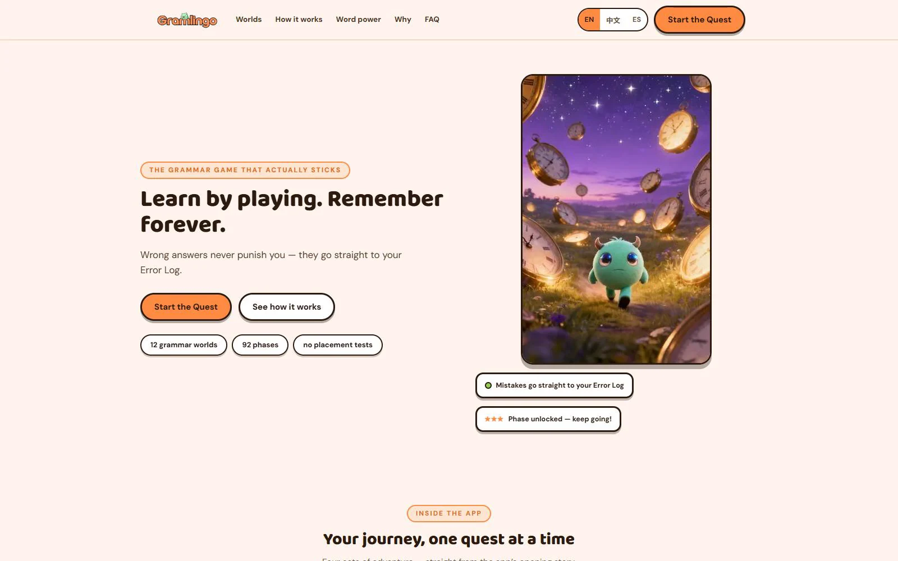
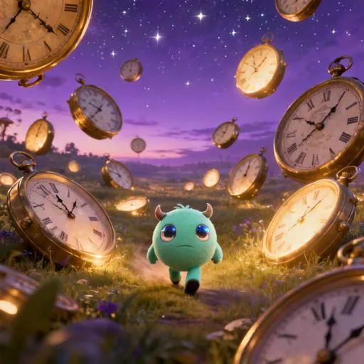
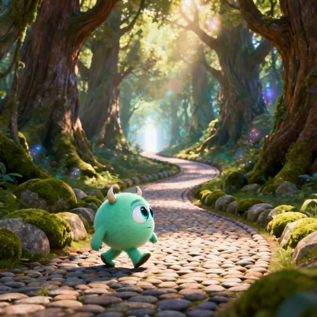
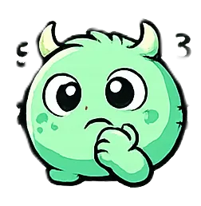

Learning · Brand & game experience
Make room
for play.
A warm learning world, built around questions, progress and a familiar companion.

GramLingo
Learning · Brand & game experience
- Brand direction
- Character system
- UX/UI & game
Start with a game.
Stay for the learning.
Goal
Make English practice feel welcoming enough to return to.
Solution
Connect the Gramlin identity, learning worlds and question journey into a playful system.
Warmth. Curiosity. A little mischief.
Companionship
The original Gramlin character.
Discovery
Distinct worlds to explore.
Progress
Questions, feedback and review.
The palette
- Sunset#FF8C42 · Primary brand colour
- Cream#FFF5EE · Ground
- Dark brown#2D1B10 · Text
- Landing green#8FD14F · Supporting colour
The work


The mark

Notes
The submitted August strategy and design decisions inform this case. Original app captures come from the working review archive; individual credits await confirmation.
Have a similar business problem?
Bring us the problem.
You do not need to know which service you need. Start with the problem, or run the free audit and let the evidence choose the next step.